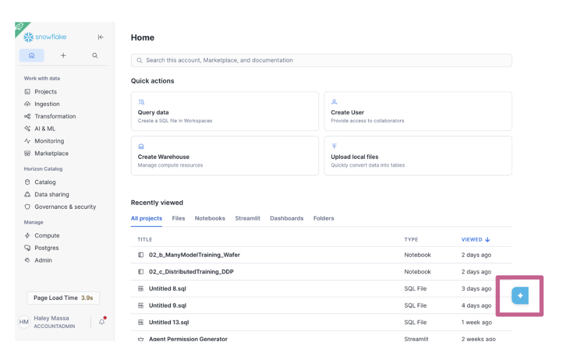
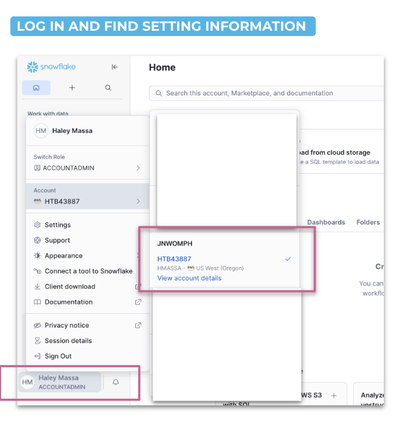
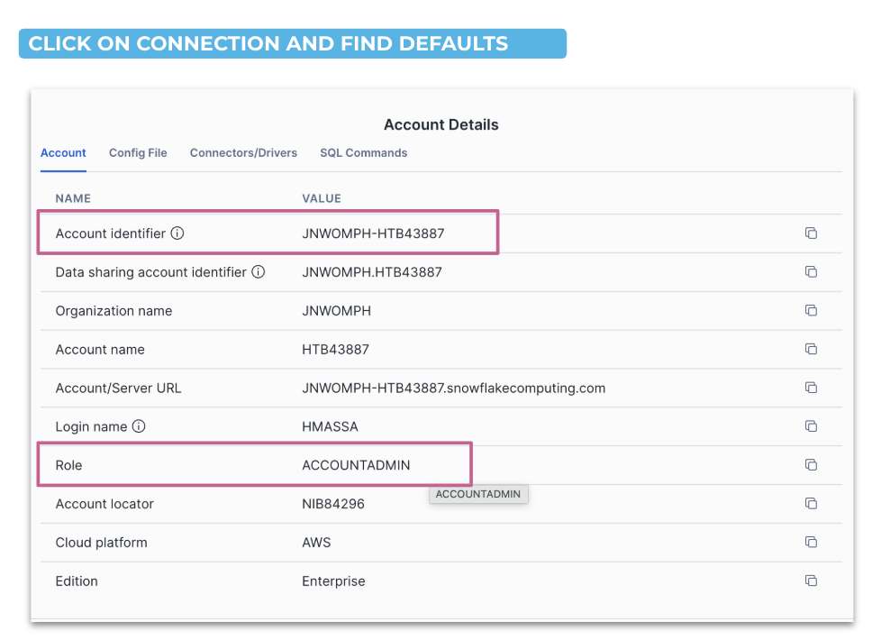
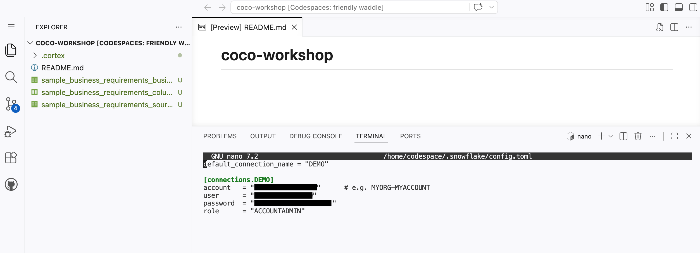
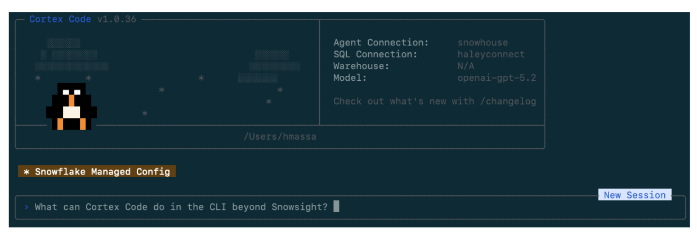

Snowflake CoCo(CoCo)는 Snowflake 환경 내에서 데이터 및 AI 워크플로를 가속화하기 위해 만들어진 Snowflake의 AI 코딩 에이전트입니다. CoCo는 데이터 카탈로그를 이해하고, 사용자 ID로 SQL을 실행하며, dbt, Git, Python, Streamlit과 네이티브로 통합됩니다.
이 가이드는 CoCo CLI 설치, Snowflake 연결 구성, 그리고 세 가지 실제 시나리오를 다루는 핸즈온 워크숍까지 안내합니다: Dynamic Table 파이프라인 구축, 파이프라인 유지·발전, 그리고 시맨틱 뷰를 활용한 Cortex 에이전트 생성.
이 박스에는 영어 본문에는 없으나 실습을 원활하게 진행하기 위한 추가 안내가 포함되어 있습니다.
CLI를 설정하기 전에, Snowflake UI에서 직접 CoCo에 접근할 수 있습니다.
Snowsight 오른쪽 하단의 파란색 별 아이콘을 클릭하면 Snowflake CoCo 패널이 열립니다.

Snowsight 홈 화면 오른쪽 하단의 CoCo 실행 버튼
이 방법은 로컬 설치 없이도 CoCo를 바로 사용할 수 있어 빠른 쿼리 작성, 스키마 탐색, 테스트에 유용합니다.
JNWOMPH-HTBXXXXX)와 역할(Role)을 확인합니다.
Snowsight에서 계정 설정 메뉴 접근 방법

계정 상세 정보 및 연결 식별자 확인 화면
연결을 위한 여러 인증 방법이 있으며, 주요 환경 변수는 다음과 같습니다:
| 변수 | 설명 |
|---|---|
SNOWFLAKE_ACCOUNT | 계정 식별자 |
SNOWFLAKE_USER | 사용자 이름 |
SNOWFLAKE_PASSWORD | 패스워드 인증 |
SNOWFLAKE_TOKEN | OAuth 토큰 |
SNOWFLAKE_TOKEN_FILE_PATH | 토큰 파일 경로 |
SNOWFLAKE_OAUTH_CLIENT_ID | OAuth 클라이언트 ID |
전체 목록은 Snowflake 연결 관리 가이드를 참고하세요.
이 워크숍에서는 CoCo CLI를 사용하기 위해 PAT(Programmatic Access Token)를 사용합니다. PAT를 사용하기 위해서는 먼저 Network Policy를 Account에 적용해야 합니다.
ADMIN 데이터베이스 생성 (Network Rule이 위치할 곳)| 설정 | 값 |
|---|---|
| Network Policy name | account_network_policy |
| Network rule name (Create rule 클릭 후) | allow_all |
| Location | ADMIN.PUBLIC |
| Type | IPv4 |
| Mode | Ingress |
| IP addresses(IPv4) | 0.0.0.0/0 입력후 + 버튼 클릭 |
allow_all Network Rule이 선택되어 있는지 확인 후 [Create] 버튼을 클릭하여 Network Policy 생성account_network_policy 오른쪽 [...] 버튼 클릭 후 [Activate On Account] 클릭이 실습에서는 모든 IP 대역을 허용했지만 실제환경에서는 엄격한 설정이 필요합니다.
위에서 확인한 계정식별자 정보와 사용하는 유저명, 그리고 PAT 값을 기록해두고 다음 CoCo CLI 설치에서 사용하도록 합니다.
PAT가 아닌 Oauth를 통한 연결에 대해 알고 싶다면 아래 참고 - Oauth를 사용하여 연결을 참고하세요.
이 워크숍에서는 PAT를 사용하고 있지만 CoCo CLI를 사용하기 위해 Oauth 방식을 사용할 수도 있습니다. Oauth 방식을 사용하면 브라우저를 통한 인증으로 CoCo CLI를 사용할 수 있습니다.
Oauth를 사용하고자 한다면 CoCo CLI 설치에서 config.toml에 입력할 내용 대신(임시 메모에 작성한 내용) 대신 아래 내용을 수정해서 사용하세요.
default_connection_name = "DEMO"
[connections.DEMO]
account = "YOUR_DEMO_ACCOUNT"
user = "YOUR_DEMO_USERNAME"
authenticator = "oauth_authorization_code"
client_store_temporary_credential = true이 설정이후에 CoCo CLI를 실행하면 브라우저를 통한 Snowflake 인증을 시도하게됩니다.
curl -LsS https://ai.snowflake.com/static/cc-scripts/install.sh | shPATH에 cortex를 추가할지 묻는 메시지가 나오면 y를 입력하세요.
cortex 명령이 인식되지 않으면 터미널을 닫고 다시 열거나 기기를 재시작하세요.
cortex --versionSnowflake CoCo는 SnowCLI와 동일한 연결 파일을 사용합니다. 위치:
~/.snowflake/config.toml(이미 connections.toml을 사용 중이라면 그 파일을 사용하세요.)
mkdir -p ~/.snowflake
touch ~/.snowflake/config.toml
chmod 600 ~/.snowflake/config.toml
open -e ~/.snowflake/config.toml아래 내용을 복사하여 본인 계정과 역할에 맞게 수정하세요:
default_connection_name = "DEMO"
[connections.DEMO]
account = "<YOUR_DEMO_ACCOUNT>" # 예: JNWOMPH-HTBXXXXX
user = "<YOUR_DEMO_USERNAME>"
password = "<YOUR_DEMO_PAT>"
role = "<YOUR_DEMO_ROLE>"수정 후 반드시 파일을 저장하세요.
connections.toml을 사용한다면 [connections.DEMO] 대신 [DEMO]를 사용해야합니다.
현재 세팅에서 role에는 ACCOUNTADMIN을 사용하면 됩니다.
irm https://ai.snowflake.com/static/cc-scripts/install.ps1 | iexPATH에 cortex를 추가할지 묻는 메시지가 나오면 y를 입력하세요.
cortex 명령이 인식되지 않으면 터미널을 닫고 다시 열거나 기기를 재시작하세요.
cortex --versionWindows에서 설정 파일 위치:
%USERPROFILE%\.snowflake\config.tomlmkdir $env:USERPROFILE\.snowflake -Force
New-Item -ItemType File -Path $env:USERPROFILE\.snowflake\config.toml -Force
notepad $env:USERPROFILE\.snowflake\config.tomldefault_connection_name = "DEMO" # 기본 Snowflake 연결 이름
[connections.DEMO] # 연결 이름 (default와 동일하면 됨)
account = "<YOUR_DEMO_ACCOUNT>" # 계정 식별자
user = "<YOUR_DEMO_USERNAME>" # 인증 사용자
password = "<YOUR_DEMO_PAT>"
role = "<YOUR_DEMO_ROLE>" # 연결에 필요한 역할수정 후 반드시 파일을 저장하세요.
connections.toml을 사용한다면 [connections.DEMO] 대신 [DEMO]를 사용해야합니다.
현재 세팅에서 role에는 ACCOUNTADMIN을 사용하면 됩니다.
GitHub Codespaces는 브라우저에서 완전히 구성된 Linux 환경을 제공합니다 — 로컬 설치가 필요하지 않습니다. CoCo CLI 설치 명령은 Mac과 동일하지만 일부 단계가 다릅니다. 사내 보안 제한이 있는 노트북에서 가이드를 진행할 경우 가장 좋은 방법입니다.
무료 GitHub 계정이 필요합니다. 없다면 github.com에서 가입하세요.
Step 1 — 새 저장소 생성
coco-workshop)Step 2 — Codespace 실행
터미널을 언제든 열려면 메뉴바에서 Terminal → New Terminal로 이동하세요.
curl -LsS https://ai.snowflake.com/static/cc-scripts/install.sh | shPATH에 cortex를 추가할지 묻는 메시지가 나오면 y를 입력하세요.
cortex --versionCodespaces 터미널에서 다음을 실행하세요:
mkdir -p ~/.snowflake
touch ~/.snowflake/config.toml
chmod 600 ~/.snowflake/config.toml
nano ~/.snowflake/config.toml아래 내용을 복사하여 계정과 역할에 맞게 수정하세요:
default_connection_name = "DEMO"
[connections.DEMO]
account = "<YOUR_ACCOUNT>" # 예: MYORG-MYACCOUNT
user = "<YOUR_USERNAME>"
password = "<YOUR_PASSWORD>"
role = "<YOUR_ROLE>"Ctrl+O, Enter로 저장한 뒤 Ctrl+X로 종료하세요. 파일이 올바르게 저장되었는지 확인하려면 아래 스크립트를 다시 실행하면 저장된 내용이 표시됩니다.
mkdir -p ~/.snowflake
touch ~/.snowflake/config.toml
chmod 600 ~/.snowflake/config.toml
nano ~/.snowflake/config.toml
GitHub Codespaces 터미널에서 config.toml 설정 예시
CoCo를 실행할 위치(프로젝트)를 생성하고 그 위치에서 실행하는 것이 좋습니다. 아래 스크립트를 이용해 별도의 디렉토리를 만들고 진행하십시오.
mkdir COCO
cd COCO연결이 구성되면 CLI를 실행합니다:
cortex -c DEMO- Choose your text style: 에서 원하는 모드(Dark, Light)를 선택합니다.
- Security notes: 를 읽고 [Y] I understand and accept를 선택합니다.
- Choose your agent account: 에서 NAME이 DEMO인 항목을 선택합니다.
- Do you want to use the same account for SQL queries? 질문에 y를 입력합니다.
- Do you trust this project? 질문에 1. Yes, proceed를 선택합니다.
연결 후 CoCo CLI 인터페이스가 표시됩니다. 간단한 질문으로 연결을 테스트해 보세요:

Snowflake CoCo CLI 연결 후 인터페이스 화면
프롬프트
What databases do I have access to?어떤 데이터베이스에 액세스할 수 있지?원래 본문에 있던 영어 프롬프트는 각 프롬프트 위에 “영어 원문”을 클릭하여 확인할 수 있습니다. 한글로 작성된 프롬프트를 사용하면 한글로 결과값을 받을 수 있습니다. 다만 결과에는 차이가 있을 수 있습니다.
데모를 시작하기 전에, 워크숍 환경을 생성하고 샘플 데이터를 로드하는 설정 스크립트를 실행하세요. 이 파일들은 이벤트 페이지 Lab resources에 있습니다.
해당 스크립트는 Workspace에서 수행하여야 합니다. Snowsight > Projects > Workspaces 에서 [+ Add new] 버튼을 이용하여 해당 sql 파일을 업로드 후 실행하세요.
파일명을 정확히 확인하고 실행하세요. 이 단계에서 실행되는 파일은 00_snowday_setup.sql와 00_sample_data.sql 단 2개입니다. 다른 파일을 실행하는 것이 아닌지 반드시 확인하세요!!
00_snowday_setup.sql을 실행합니다. 다음이 생성됩니다:
COCO_WORKSHOP 데이터베이스PIPELINE_LAB 및 SOURCE_DATA 스키마COCO_WORKSHOP_WH 웨어하우스 (X-Small, 120초 후 자동 정지)00_sample_data.sql을 실행합니다. 다음 테이블이 생성·데이터가 채워집니다:
BRONZE_SAP_AP_INVOICES — SAP 인보이스 15건 (USD, EUR, GBP)BRONZE_ORACLE_AP_INVOICES — Oracle 인보이스 15건 (USD, EUR, GBP)BRONZE_BAAN_AP_INVOICES — Baan 인보이스 10건 (EUR, GBP) — 데모 2에서 사용BRONZE_WORKDAY_AP_INVOICES — Workday 인보이스 10건 (USD, GBP, EUR) — 데모 2에서 사용AGENT_EVAL_SET — 황금 평가 질문 15개 — 데모 3에서 사용처음부터 다시 시작해야 할 경우, 01_demo_reset.sql을 실행하여 데모로 생성된 모든 객체를 삭제한 뒤 설정 스크립트를 다시 실행하세요.
이 워크숍은 데이터 탐색부터 운영화와 선택적 에이전트 설계까지, 세 개의 데모에 걸쳐 AP 인보이스 단일 스토리라인을 따릅니다.
재무팀은 신뢰할 수 있는 AP 인보이스 레이어가 필요합니다. SAP와 Oracle의 인보이스 데이터는 Snowflake에 이미 존재하지만, 표준화된 Silver 객체가 없습니다. 목표는 요구 사항이 변경될 때마다 탐색 작업을 반복하지 않고도 설명, 모니터링, 발전시킬 수 있는 단일의 잘 모델링된 테이블을 만드는 것입니다.
새 스키마에 들어갔을 때 가장 자연스러운 첫 번째 작업인 데이터 탐색으로 시작합니다.
프롬프트
What tables are in the `COCO_WORKSHOP.SOURCE_DATA` schema?
For each table, give me a one-line description of what it appears to contain and identify
which ones are most relevant to an AP invoices Silver layer.`COCO_WORKSHOP.SOURCE_DATA` 스키마에 있는 테이블들을 알려줘.
각 테이블에 대해 어떤 내용을 담고 있는지 한 줄로 설명하고,
AP 인보이스 Silver 레이어와 가장 관련성이 높은 테이블이 무엇인지 알려줘.중요 테이블을 파악한 후, 가장 빠른 정규화 계획을 세우기 위해 스키마를 비교합니다.
프롬프트
Compare the columns between
COCO_WORKSHOP.SOURCE_DATA.BRONZE_SAP_AP_INVOICES and
COCO_WORKSHOP.SOURCE_DATA.BRONZE_ORACLE_AP_INVOICES.
Return:
- Equivalent fields with different names
- Fields that require type normalization or default values
- Differences that should remain open questions instead of becoming hidden assumptions아래 두 테이블의 컬럼을 비교해줘:
COCO_WORKSHOP.SOURCE_DATA.BRONZE_SAP_AP_INVOICES
COCO_WORKSHOP.SOURCE_DATA.BRONZE_ORACLE_AP_INVOICES
반환 항목:
- 이름은 다르지만 동일한 의미를 가진 필드
- 타입 정규화 또는 기본값이 필요한 필드
- 숨겨진 가정으로 처리하지 말고 열린 질문으로 남겨야 할 차이점
이 단계에서는 Plan Mode(Ctrl+P)를 켜서 CoCo가 다단계 작업을 실행하기 전에
어떻게 생각하는지 확인하세요.
Plan Mode는 생각하는 동안 읽기 전용 상태를 유지하고, 구조화된 다단계 계획을 반환한 뒤 실행 전 승인을 기다립니다. 핵심 테이블 생성처럼 위험도가 높은 작업에 유용합니다.
Ctrl+P그런 다음 아래 프롬프트를 실행하세요:
Use database COCO_WORKSHOP and schema PIPELINE_LAB for outputs.
Create a Dynamic Table called SILVER_AP_INVOICES in my current schema by combining
COCO_WORKSHOP.SOURCE_DATA.BRONZE_SAP_AP_INVOICES and
COCO_WORKSHOP.SOURCE_DATA.BRONZE_ORACLE_AP_INVOICES.출력 결과는 COCO_WORKSHOP 데이터베이스의 PIPELINE_LAB 스키마에 저장해.
현재 스키마에 SILVER_AP_INVOICES라는 Dynamic Table을 생성하되,
COCO_WORKSHOP.SOURCE_DATA.BRONZE_SAP_AP_INVOICES와
COCO_WORKSHOP.SOURCE_DATA.BRONZE_ORACLE_AP_INVOICES를 결합하여 만들어줘.완료 후 Plan Mode를 종료하세요 — 실행을 승인하면 자동으로 꺼집니다.
$dynamic-tables 스킬 사용스킬(Skill)은 특정 Snowflake 작업을 처리하는 방법을 CoCo에 알려주는 재사용 가능한 워크플로입니다. 번들 스킬은 CoCo에 내장된 검증된 패턴 기반의 Snowflake 네이티브 워크플로입니다.
먼저 사용 가능한 스킬 목록을 확인하세요:
/skill list스킬 리스트에서 빠져나오려면 ESC 를 입력하세요.
Dynamic Tables 스킬을 적용하기 전에 살펴보세요:
What does the $dynamic-tables skill do? Summarize when I should use it,
what inputs it expects, and what kinds of output it returns.$dynamic-tables 스킬이 무엇을 하는지, 언제 사용하면 좋은지, 어떤 입력값을 기대하는지, 어떤 종류의 출력을 반환하는지 요약해줘.그런 다음 SILVER_AP_INVOICES에 적용하세요:
$dynamic-tables
Analyze the Dynamic Table SILVER_AP_INVOICES in my current schema.
Return:
1. The recommended TARGET_LAG choice for this workflow and why
2. SQL to inspect current state, lag, and refresh history
3. The main failure or staleness patterns to watch for
4. A short best-practices checklist for operating this table well$dynamic-tables
현재 스키마의 Dynamic Table SILVER_AP_INVOICES를 분석해줘.
반환 항목:
1. 이 워크플로에 권장하는 TARGET_LAG 설정과 그 이유
2. 현재 상태, 지연(lag), 새로고침 이력을 확인하는 SQL
3. 주의해야 할 주요 실패 또는 데이터 지연 패턴
4. 이 테이블을 잘 운영하기 위한 간단한 모범 사례 체크리스트변경 후마다 재실행할 수 있는 간단한 증명 쿼리로 데모 1을 마무리합니다.
Give me one concise proof query for SILVER_AP_INVOICES that shows record counts
by SOURCE_SYSTEM and is easy to rerun after future changes.SILVER_AP_INVOICES에 대해 SOURCE_SYSTEM별 레코드 수를 보여주는 간결한 증명 쿼리 하나를 작성해줘. 향후 변경 후에도 쉽게 재실행할 수 있어야 해.sql/02_silver_ap_invoices_proof.sql
필요하다면 작성해준 쿼리를 위 파일이름으로 저장하라고 요청할 수 있습니다.
데모 1이 끝나면 Silver 등급의 AP 인보이스 Dynamic Table, 번들 스킬로 생성한 운영 런북, 그리고 변경마다 재실행할 증명 쿼리를 갖게 됩니다.
한 달 후, 비즈니스에서 AP 인보이스 파이프라인을 확장하는 PRD를 전달합니다. 새 소스 시스템 추가, 필드 요구 사항 변경, 일부 정의 명확화가 필요합니다. 매번 긴 프롬프트로 해결하는 대신, 이 워크플로를 커스텀 스킬로 표준화할 수 있습니다.
이벤트 페이지에서 Finance Transformation PMO가 준비한 세 개의 CSV 파일을 다운로드하세요:
sample_business_requirements_source_onboarding.csv — 새 소스 시스템(Baan, Workday), 담당자, 우선순위, 목표 일정sample_business_requirements_column_mapping.csv — 두 새 소스에서 Silver 스키마로의 필드 수준 매핑sample_business_requirements_business_rules.csv — 상태 정규화, 중복 제거 로직, 통화 처리, 열린 질문 등 BR-001~BR-010데모 2를 시작하기 전에 세 파일을 모두 다운로드하세요.
이 항목은 GitHub Codespaces를 사용할때만 사용합니다.
GitHub Codespaces를 사용 중이라면 로컬 장치로 파일을 다운로드할 수 없습니다. 대신, Codespaces 터미널에서 직접 CSV 파일을 작업 디렉터리로 가져오세요.
CoCo를 실행하기 전(또는 /quit으로 종료 후), Codespaces 터미널에서 다음을 실행하세요:
BASE="https://raw.githubusercontent.com/Snowflake-Labs/sfquickstarts/master/site/sfguides/src/cortex-code-foundations/assets"
curl -O "$BASE/sample_business_requirements_source_onboarding.csv"
curl -O "$BASE/sample_business_requirements_column_mapping.csv"
curl -O "$BASE/sample_business_requirements_business_rules.csv"파일 다운로드 후 CoCo를 다시 실행(cortex -c DEMO)하고 Step 2.1로 계속하세요.
CSV 파일을 작업 디렉터리에 저장한 후 실행하세요:
앞에서 생성한 COCO 디렉토리에 다운로드한 파일을 저장하면 됩니다.
Read the local files sample_business_requirements_source_onboarding.csv and
sample_business_requirements_business_rules.csv.
Summarize the changes that affect the AP invoices pipeline.
Return:
- New source systems being introduced
- New fields or business rules that affect the Silver layer
- Ambiguities or open questions that should be resolved before implementationsample_business_requirements_source_onboarding.csv와
sample_business_requirements_business_rules.csv 파일을 읽어줘.
AP 인보이스 파이프라인에 영향을 미치는 변경 사항을 요약해줘.
반환 항목:
- 도입되는 새 소스 시스템
- Silver 레이어에 영향을 미치는 새 필드 또는 비즈니스 규칙
- 구현 전에 해결해야 할 모호한 부분과 열린 질문들
여기서 멈추고 단순히 CoCo에 SILVER_AP_INVOICES를 업데이트하라고 요청하면 적절한 일회성 결과를 얻습니다.
하지만 진짜 가치는 반복 가능한 패턴에 있습니다:
이것이 바로 커스텀 스킬이 표준화하도록 설계된 워크플로입니다.
| 스킬 유형 | 위치 | 범위 |
|---|---|---|
| 번들(Bundled) | CoCo 내장 | 기본 제공 |
| 사용자 수준 | ~/.snowflake/cortex/skills/ | 프로젝트 전반 |
| 프로젝트 수준 | 저장소의 .cortex/skills/ | 해당 프로젝트만 |
이 퀵스타트에서는 저장소를 클론하면 동일한 동작을 얻을 수 있도록 프로젝트 스킬을 사용합니다.
/skill listThis seems like a repeatable workflow I will have for many PRDs. Walk me through
[$skill-development] for building a project skill that will help me take PRD-style
files like this and turn them into a plan for putting them into a target Dynamic Table
(for this demo, SILVER_AP_INVOICES).
Define:
- When to use the skill
- What inputs it expects (for example, prd_path and target_dynamic_table)
- The exact outputs it should always return
- Best practices for surfacing assumptions and open questions instead of guessing
- An example usage for an AP invoices pipeline update
Requirements:
- Make it a project skill
- Put it under .cortex/skills/ in this demo repo
- Start by supporting XLSX files이런 스킬은 여러 PRD에 반복적으로 사용하게 될 것 같아. [$skill-development]를 통해 이런 PRD 형식의 파일을 받아 대상 Dynamic Table에 적용할 계획으로 변환하는 프로젝트 스킬을 만드는 과정을 안내해줘 (이 데모에서는 SILVER_AP_INVOICES가 대상).
정의 항목:
- 스킬 사용 시점
- 기대하는 입력값 (예: prd_path, target_dynamic_table)
- 항상 반환해야 할 정확한 출력 형식
- 추측하지 않고 가정과 열린 질문을 수면 위로 드러내는 모범 사례
- AP 인보이스 파이프라인 업데이트를 위한 예시 사용법
요구 사항:
- 프로젝트 스킬로 만들기
- 이 데모 저장소의 .cortex/skills/ 하위에 위치
- XLSX 파일 지원으로 시작Run the project skill we just made prd-to-silver
Context:
- prd_path: sample_business_requirements_column_mapping.csv
- target_dynamic_table: SILVER_AP_INVOICES
Return:
1. Summary of requested changes
2. Source-to-Silver mapping summary
3. Open questions and assumptions
4. DDL delta plan for SILVER_AP_INVOICES
5. Validation queries to run after implementation방금 만든 프로젝트 스킬을 실행해.
컨텍스트:
- prd_path: sample_business_requirements_column_mapping.csv
- target_dynamic_table: SILVER_AP_INVOICES
반환 항목:
1. 요청된 변경 사항 요약
2. 소스-Silver 매핑 요약
3. 열린 질문 및 가정
4. SILVER_AP_INVOICES에 대한 DDL 델타 계획
5. 구현 후 실행할 검증 쿼리Update SILVER_AP_INVOICES in my current schema using the change plan from
sample_business_requirements_source_onboarding.csv,
sample_business_requirements_column_mapping.csv, and
sample_business_requirements_business_rules.csv.
Assume the PRD introduces Baan and Workday as additional AP invoice sources.
Return:
- The updated Dynamic Table SQL
- A short explanation of how the new sources map into the common schema
- Any assumptions that require engineering review
- Validation queries that prove the update workedsample_business_requirements_source_onboarding.csv,
sample_business_requirements_column_mapping.csv,
sample_business_requirements_business_rules.csv의 변경 계획을 바탕으로 현재 스키마의 SILVER_AP_INVOICES를 업데이트해.
PRD에서 Baan과 Workday를 추가 AP 인보이스 소스로 도입한다고 가정해.
반환 항목:
- 업데이트된 Dynamic Table SQL
- 새 소스가 공통 스키마에 어떻게 매핑되는지 짧은 설명
- 엔지니어링 검토가 필요한 가정 사항
- 업데이트가 완료되었음을 증명하는 검증 쿼리List the artifacts in a local markdown file I should save from this PRD-driven update
so another engineer can review the change, rerun the checks, and reuse the
PRD Evaluator skill.이 PRD 기반 업데이트에서 저장해야 할 아티팩트를 로컬 마크다운 파일 형태로 나열해줘. 다른 엔지니어가 변경 사항을 검토하고, 검증 작업을 재실행하고, PRD 평가자 스킬을 재사용할 수 있어야 해.이 시점에서 대부분의 팀에게 퀵스타트가 완료됩니다: 큐레이션된 AP 인보이스 객체와 새 PRD에 따라 이를 발전시키는 반복 가능한 워크플로가 완성되었습니다.
자신이 작성한 스킬을 스킬 카탈로그에 등록하여 계정의 다른 사용자가 이 스킬을 공유받아 사용할 수도 있습니다. CoCo에게 스킬 공유를 요청해 보세요.
방금 만든 스킬을 스킬 카탈로그에 등록해줘Snowsight에서 Catalog > Skills and plugins 에서 등록된 스킬을 찾을 수 있습니다.
NorthStar Auto-Grader 에서 채점 스크립트를 수행하고 뱃지를 획득하세요! 다음 데모3은 선택사항입니다.
뱃지 획득에 성공하셨나요? 그렇다면 다음 교육에 도전해보세요. Snowsight에 환경에 결합되어 있는 CoCo Snowsight의 기능들을 경험해보실수 있습니다.
CoCo Essentials 온디맨드 교육에서 CoCo Snowsight에 대한 추가 학습을 하실 수 있습니다.
위 교육의 실습 노트북의 한국어 버전 -> 다운로드
Snowflake CoCo Desktop 버전도 설치해보세요! Snowflake CoCo Desktop 다운로드
이 시점에서 큐레이션된 AP 인보이스 Silver 객체와 비즈니스 요구 사항에 따라 발전시키는 반복 가능한 방법이 있습니다. 에이전트를 도입하기에 가장 적합한 순간입니다 — 신뢰할 수 있고 잘 모델링된 데이터에 AI 경험을 근거할 수 있기 때문입니다.
Help me define a Cortex data agent on top of SILVER_AP_INVOICES in my current schema.
Suggest:
- The primary audience
- The top five business questions the agent should answer
- Guardrails that keep the agent grounded in the curated data
- Any semantic descriptions that would improve answer quality현재 스키마의 SILVER_AP_INVOICES 위에 Cortex 데이터 에이전트를 정의하는 데 도와줘. 작업은 하지말고 제안만 해줘
제안 항목:
- 주 사용대상
- 에이전트가 답해야 할 상위 5개 비즈니스 질문
- 에이전트를 큐레이션된 데이터에 근거하도록 하는 가드레일
- 답변 품질을 향상시킬 수 있는 시맨틱 설명에이전트가 대부분의 답변을 위해 의존할 시맨틱 뷰를 생성합니다:
Let's start by building the semantic model using the $semantic-view.
Create a semantic view called SV_AP_ANALYTICS over <YOUR_SCHEMA>.SILVER_AP_INVOICES.
It should support natural language questions like:
- "Total AP spend by vendor over the last 12 months"
- "Invoice count by month and business unit"
- "Top 10 vendors by unpaid invoice amount"
Return:
- A complete semantic view definition that clearly names business measures and dimensions.
- Any assumptions you are making about grain, time dimensions, and vendor identifiers.$semantic-view를 사용하여 시맨틱 모델을 구축할게.
<YOUR_SCHEMA>.SILVER_AP_INVOICES 위에 SV_AP_ANALYTICS라는 시맨틱 뷰를 생성해줘.
다음과 같은 자연어 질문을 지원해야 해:
- "지난 12개월 벤더별 AP 요약 결제 총액"
- "월별 및 비즈니스 유닛별 인보이스 건수"
- "미지급 인보이스 금액 기준 상위 10개 벤더"
반환 항목:
- 비즈니스 측정값과 차원이 명확히 명명된 완전한 시맨틱 뷰 정의
- 데이터 기록가(grain), 시간 차원, 벤더 식별자에 대한 가정 사항$cortex-agent
Create an agent named AP_ANALYTICS_ASSISTANT.
The agent should:
- Prefer SV_AP_ANALYTICS as its primary data source.
- Always respond with three parts: (1) the final answer, (2) the SQL used,
and (3) any assumptions about grain or filters.
- Ask a clarifying question if the requested metric or time grain is ambiguous.
Return a configuration I can save alongside my project files.$cortex-agent
AP_ANALYTICS_ASSISTANT라는 이름의 에이전트를 생성해.
에이전트 동작 조건:
- SV_AP_ANALYTICS를 주 데이터 소스로 우선 사용할 것
- 항상 세 부분으로 응답할 것: (1) 최종 답변, (2) 사용된 SQL, (3) 데이터 기록가(grain) 또는 필터에 대한 가정 사항
- 요청된 지표나 시간 기록가가 애매한 경우 명확화 질문을 할 것
프로젝트 파일과 함께 저장할 수 있는 설정(configuration)을 반환해줘.Help me audit my Semantic View for best practices and provide suggestions.시맨틱 뷰를 모범 사례 관점에서 검토하고 개선 안을 제안해줘.$agent-optimize와 $semantic-view 스킬은 에이전트를 반복적으로 개선하는 구조화된 워크플로를 제공합니다:
생성, 감사(VQR 테스트, 모범 사례), 디버그(실패 쿼리 근본 원인 분석)
생성, 임시 테스트, 쿼리 디버그, 최적화(평가 결과로 정확도 개선)
팀들이 이후 일반적으로 진행하는 단계: 큐레이션된 평가 데이터셋 실행, 스키마 변경 후 검증된 쿼리 테스트, 모범 사례 시맨틱 모델 감사, 사용자 피드백 기반 에이전트 정확도 반복 개선.
핵심 패턴은 단순합니다: 구체적인 객체 하나를 선택하고, CoCo에 구체적인 아티팩트 하나를 요청하고, 결과를 프로젝트에 보관하세요.
데모 1에서는 Dynamic Table, 번들 스킬로 만든 소규모 런북, 매번 변경 후 재실행할 단일 증명 쿼리를 만들었습니다. 데모 2에서는 PRD와 그 평가자를 동일한 데이터 제품의 일부로 다루었습니다 — 느슨하게 작성된 요구 사항 파일을 구조화되고 검토 가능한 변경 계획으로 바꾸는 커스텀 스킬을 통해서요. 선택적인 데모 3의 에이전트 설계에 이르면, 번들 스킬과 커스텀 스킬이 어떻게 함께 체계적인 데이터 엔지니어링에서 신뢰할 수 있는 AI 경험으로 이어지는 경로를 만드는지 볼 수 있습니다.
Ctrl+P) 활용$dynamic-tables) 적용